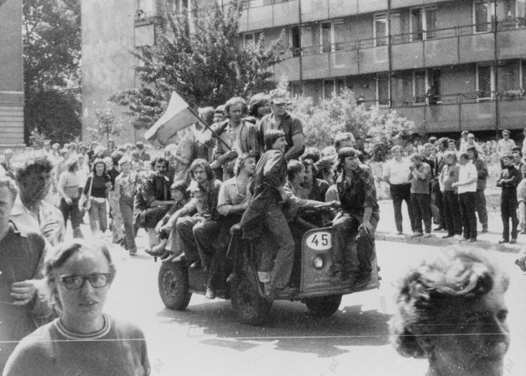
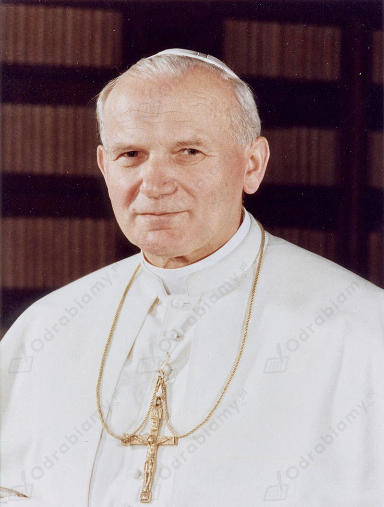

Plan gospodarczy wdrażany w pierwszej połowie lat 70. przez Edwarda Gierka polegał na:
| Strajki robotnicze w 1976 r. | |
| Przyczyny | Skutki |
|
|

Radomski czerwiec 1976 r., źródło zdjęcia: www.dzieje.pl
Wybór Karola Wojtyły na papieża był istotny z kilku powodów. Jan Paweł II był Polakiem, który poznał życie i problemy ludności w komunistycznym kraju, doświadczył represji władz, wobec Kościoła i jego osoby osobiście, więc spodziewano się wsparcia z jego strony. Poza tym im mocniej władza naciskała na Kościół, tym mocniej społeczeństwo o niego walczyło. Wybór Karola Wojtyły na papieża pokazywał, że stolica Piotrowa widzi tę walkę, docenia ją i chce wesprzeć poprzez wybór Polaka na głowę Kościoła. Do tego należy zwrócić na kwestie psychologiczne. Uciśniony naród w tych smutnych czasach otrzymał zastrzyk nadziei, a także wiary. Polacy mogli czuć się zauważeni, a przy tym zdawać sobie sprawę, że wśród najpotężniejszych ludzi świata mają przyjaciela i opiekuna, który szczególną uwagę będzie przykuwał do wydarzeń dziejących się w Polsce.
Wybór Polaka na papieża (16 października 1978 r.) wywołał wielki entuzjazm polskich katolików i niepokój komunistów. Jan Paweł II był pierwszym papieżem, który konsekwentnie dążył do poznania współczesnego świata i podjęcia próby rozwiązania trudnych problemów cywilizacyjnych. Nawoływał do pokoju, tolerancji oraz sprawiedliwości. Papież-Polak dla komunistów z PZPR okazał się nie lada problemem. dla polskiego społeczeństwa natomiast stanowił ogromne wsparcie. Wspólne modlitwy z papieżem pozwoliły wielu Polakom zrozumieć, jak dużą potęgę wspólnie stanowią. Społeczeństwo po raz pierwszy poczuło swoją siłę. Jan Paweł II bardzo życzliwie odnosił się do opozycji demokratycznej.

Jan Paweł II, źródło zdjęcia: Wikimedia Commons.